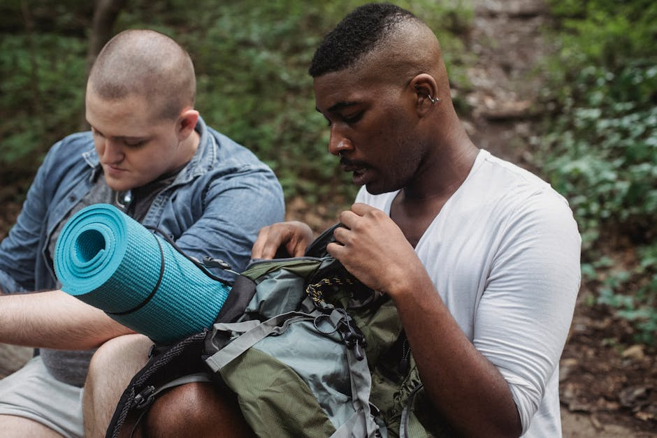
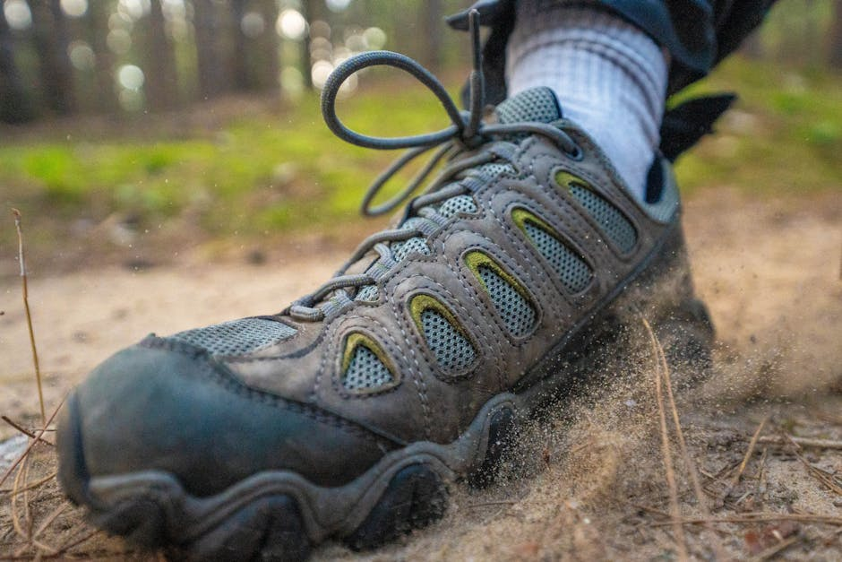
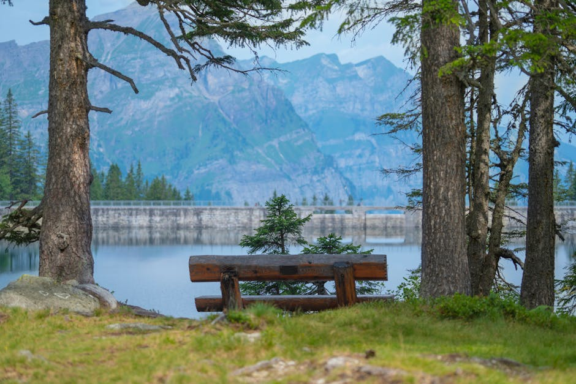
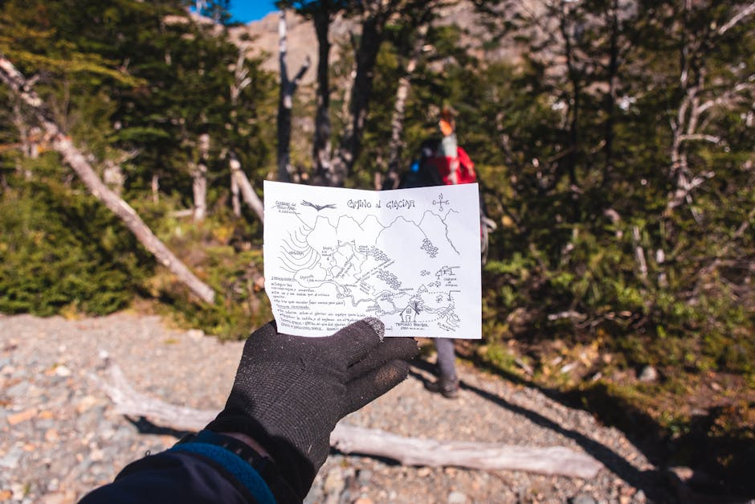

La rete definitiva per scoprire le migliori escursioni Italia, itinerari di trekking indimenticabili e rifugi esclusivi dedicati a terme e spa.
Inizia l'EsplorazioneBenvenuti su Kreutzer Grid, il punto di incontro per gli appassionati di attività all'aperto e per chi cerca un equilibrio perfetto tra avventura e relax. Selezioniamo con cura i migliori itinerari per le tue escursioni Italia, offrendoti recensioni dettagliate sui sentieri più affascinanti e meno battuti della nostra penisola.
Non ci limitiamo solo al trekking. Sappiamo che dopo una lunga giornata sui percorsi natura, il corpo merita riposo. Per questo esploriamo per te le eccellenze del benessere alpino e collinare, guidandoti verso le migliori strutture di terme e spa, per garantirti un recupero totale in armonia con l'ambiente.

Storie di chi ha riscoperto la natura grazie alle nostre guide.
"Grazie agli articoli di Kreutzer Grid ho scoperto percorsi natura in Trentino che non conoscevo. Le loro recensioni sull'attrezzatura mi hanno salvato durante la mia ultima escursione."
- Marco R., 2026
"Cercavo consigli su come unire la fatica della montagna al relax. Le loro raccomandazioni sulle migliori terme e spa in Italia sono semplicemente perfette."
- Giulia S., 2026
"Una rivista online eccellente. Gli articoli sulle attività all'aperto sono dettagliati e mi hanno incoraggiato a intraprendere il mio primo cammino di più giorni."
- Alessandro M., 2026
Il nostro approccio integrato per vivere la natura al 100%.

Dalle maestose Dolomiti agli aspri sentieri costieri del Sud Italia, pubblichiamo recensioni e guide per affrontare il trekking in totale sicurezza. Mappiamo percorsi natura per ogni livello di esperienza, analizzando dislivelli, punti panoramici e rifugi lungo la via, per permetterti di organizzare la tua avventura senza sorprese.
Scopri gli itinerari →
Il vero benessere si ottiene quando lo sforzo fisico viene bilanciato dal recupero. Esplora le nostre selezioni dedicate alle migliori strutture di terme e spa situate nei pressi dei grandi parchi nazionali. Acque termali, saune alpine e trattamenti naturali per ricaricare i muscoli e la mente dopo una lunga camminata.
Esplora i ritiri relax →
Un'escursione ben riuscita inizia dalla preparazione. Forniamo guide all'acquisto per l'equipaggiamento tecnico, consigli su come leggere il meteo montano e suggerimenti pratici per vivere le attività all'aperto in modo responsabile e sostenibile. Prepariamo la tua mente e il tuo zaino per la prossima meta.
Leggi i nostri consigli →Tutto quello che devi sapere sulle nostre guide e raccomandazioni.
Recensiamo un'ampia varietà di itinerari. Troverai da passeggiate semplici su percorsi natura adatti alle famiglie, fino a trekking impegnativi e vie ferrate per escursionisti esperti. Ogni guida specifica chiaramente il dislivello e la preparazione richiesta.
Assolutamente sì. Crediamo fortemente nel binomio fatica-recupero. Molte delle nostre guide sulle escursioni Italia includono raccomandazioni sulle migliori terme e spa situate a breve distanza dal punto di arrivo del sentiero.
Nella nostra sezione dedicata alle attività all'aperto, pubblichiamo regolarmente articoli dettagliati su come scegliere scarponi, zaini, abbigliamento tecnico e accessori, basandoci sulle stagioni e sulla tipologia di terreno che andrai ad affrontare.
Sì, dedichiamo una specifica categoria editoriale ai percorsi natura adatti alle famiglie con bambini. Questi itinerari sono caratterizzati da dislivelli minimi, sentieri ampi, presenza di punti di ristoro e totale sicurezza.
Kreutzer Grid è una rivista editoriale e un sito promozionale indipendente. Noi forniamo le informazioni, le ispirazioni e le recensioni, ma non organizziamo direttamente tour guidati. Per le prenotazioni e l'acquisto di servizi specifici, ti indirizzeremo ai fornitori ufficiali come Trekking.it.
Vuoi proporre un itinerario o collaborare con la nostra rivista?
Via delle Montagne, 42
00100 Roma, Italia
Lunedì - Venerdì
09:00 - 18:00